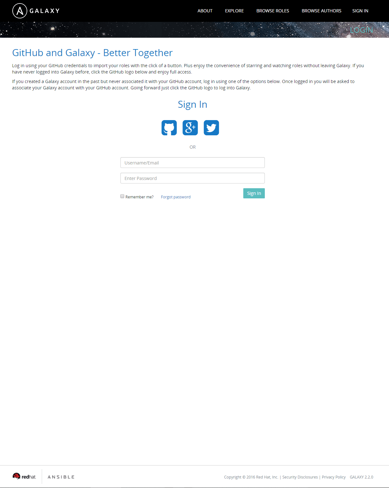
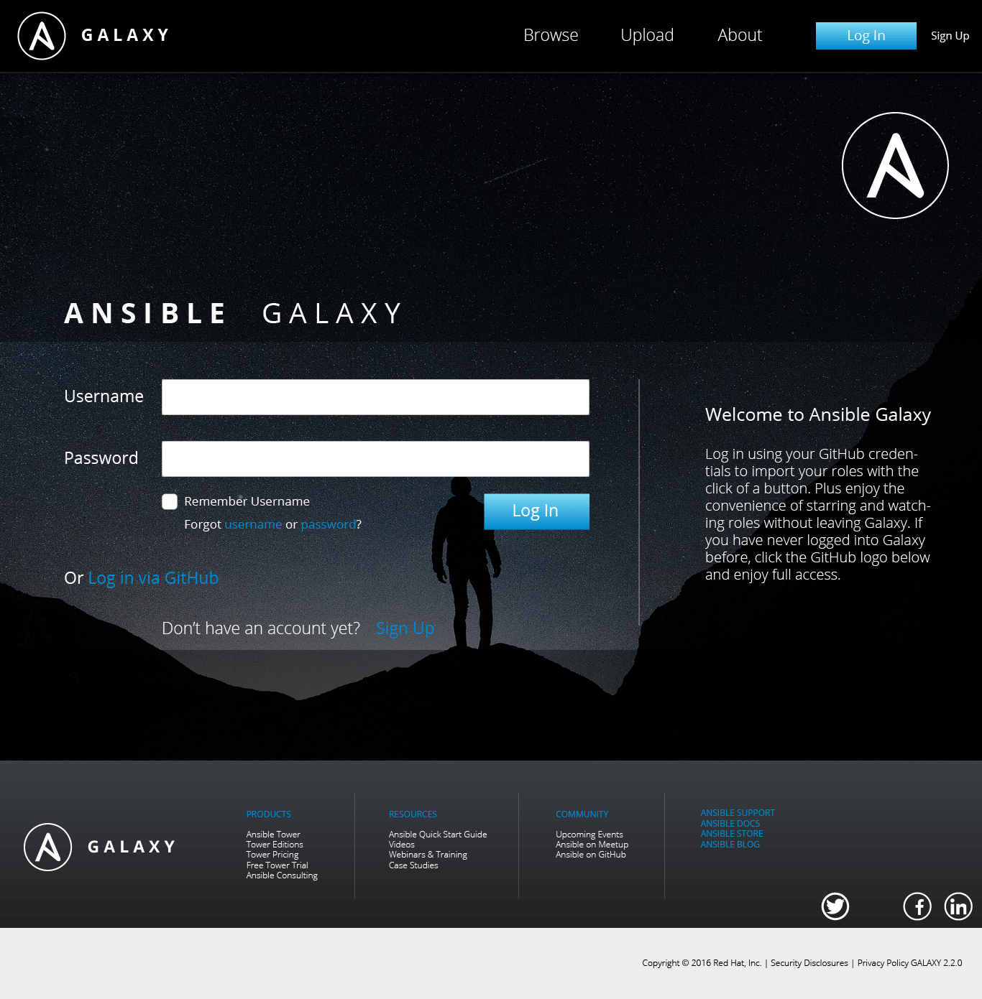

Design Method

Identify: In this stage, the research and design team works to characterize users of the product or platform. This is achieved through the use of observations, interviews, online research, reviews, and surveys. After conducting these methods, a set of critical user needs is identified, a list of the most important qualities of the product that users need to have an optimal user experience.

Design: In this stage, the team brainstorms different features or modifications for inclusion in the redesign. The team typically creates wireframes, templates, and design concepts utilizing the user needs generated from Identify as a guide. Multiple designs are generated in order to present a range of different choices.

Verify & Validate: After multiple design concepts have been created, the team tests the feasibility of these designs with potential users. The team incorporates the feedback gained in this stage to converge onto a single concept and to finalize this design. Finally, the team may implement this verified design.
What is Ansible Galaxy?
As a part of our Senior Capstone at Tufts University, my team is working on the task of redesigning the Ansible Galaxy website. This website supplements the Ansible platform, which is used for automating IT processes. Ansible is a large suite of tools that are utilized both through command line and web interfaces. Galaxy is a unified repository of brilliant IT automation solutions created for the Ansible platform that people from all over the world have shared. Anyone can download roles that another user has contributed. Our team's ongoing mission is to enhance this service even further by applying principles of user-centered design in order to bring an unparalleled experience to its users.
Project Expectations & Goals
In accordance with the mission of Ansible Galaxy, our team detailed the following goals:
The main goal of the project is to redesign the Ansible Galaxy website (galaxy.ansible.com) for improved user experience. The team will conduct user research to define user needs and design the best user interface based on these needs. Modules from the PatternFly Design Library will be used wherever applicable, and our newly designed patterns will be contributed to PatternFly. We have also taken on the stretch goal of fully implementing the newly designed website.

Exploratory Interviews
The first step of characterizing Ansible Galaxy users was to meet with Red Hat sponsors in order to better understand the project expectations and goals. Given that the team was not familiar with the IT domain prior to this project, the video conference allowed the team to gain a better perspective on the product itself. The team learned about Galaxy’s role within the community and the types of interactions that users might have while using the website. The team set up a weekly meeting time in order to maintain consistent contact with Red Hat sponsors.

Online Literature Review
To supplement the information learned in the exploratory interview with Red Hat, the team performed an online literature review. This review was designed to fill in critical knowledge gaps in terms of IT automation and the Ansible Galaxy product domain. A variety of different sources were reviewed, covering topics from current impressions of Ansible Galaxy to typical IT tasks. Each article was reviewed by team members and a final bulleted list for each article was compiled. This literature review provided the team with a foundation moving forward into a heuristic analysis of Galaxy and its competitors.

Heuristic Review
The next task involved conducting a heuristic analysis of Ansible Galaxy, Docker Hub, and the newly-created Docker Store Beta. A heuristic analysis is a method of comparing products along a set of predefined characteristics. The team used Nielsen's 10 Heuristics for Good User Interface Design (Nielsen, 1995). This set defines ten separate metrics, such as error recovery and overall aesthetic quality. This heuristic review provided us with a bird’s eye view qualitative assessment of each of the three evaluated platforms, which served as a crucial stepping stone in extrapolating a quantitative analysis in our expert review. This heuristic review served as an effective and succinct platform from which we could begin to identify possible missed use-cases. The review ultimately helped to inform our creation of user needs by informing the development of survey items.

Expert Review
After completing our heuristic review, we conducted an expert review of Ansible Galaxy, Docker Hub, and the Docker Store Beta site in order to have a quantitative measure of the current sharing platforms. Each member of the team ranked each platform on a scale of 0-5 for a variety of metrics defined by the team (i.e. “Ease of browsing”). This provided a more quantitative set of metrics for comparing overall quality of each site’s user experience as well as an item by item comparison of which sites have better flows for specific tasks. Similar to the heuristic review, this helped the team concentrate the survey questionnaire items in order to uncover user needs from areas where Ansible Galaxy could specifically be improved.
Survey Creation & Modification
Following the expert review and TTS exploratory interview, the team began to more precisely characterize the users of Ansible Galaxy. In order to do so, we utilized our preliminary findings to develop a structured survey for current and potential users about their needs. This survey was piloted to Red Hat sponsors, Dr. Aurelio (professor of Capstone course), and a current TTS employee. The team modified the survey according to the feedback received, ensuring that the survey would generate applicable and relevant information. This survey was then distributed to locally accessible system administrators, members of the Ansible Galaxy User community through Red Hat sponsors, and IT professionals on a Reddit Ansible community forum. The team had initially proposed to reach out to Ansible Galaxy users via their GitHub repositories, however, this process would have been less efficient than the one conducted.
Survey Results
The team used Google Forms’ built-in functionality for analyzing survey responses and codified open-ended questions based on commonly mentioned ideas. This helped us determine what users found to be the most salient issues or important features of IT automation sharing platforms. Averages were generated for specific questions, providing quantitative results. The qualitative questionnaire results were coded by identifying themes and tallying up responses that fell into each category. In total, 18 responses were considered in our results analysis. Based on what users consistently stated were important features for these platforms, we were able to develop a specific and refined list of user needs.

User Needs Development
Based on the results of the survey, Andromeda was able to paint a detailed portrait of a typical Ansible Galaxy user. Additionally, the team identified good and bad elements of current automation platforms. Good IT automation platforms such as Ansible Galaxy need to host reliable content, support easy interaction, and offer a variety of choices. Conversely, less satisfactory platforms lack curated lists, provide poorly coded modules, and ineffective or incomplete documentation. The methods conducted by the Andromeda team resulted in the development of a set of ten user needs that ultimately factored into initial concept generation.

Translating User Needs into
System Requirements
With user needs and their detailed justifications from the research findings established, the team then proceeded to map out how these needs and justifications translated to system requirements. To accomplish this, the team simply compiled a table that tied each piece of feedback to a user need. The wording of each user need was then adjusted to reflect a more concrete requirement of the system. For each of these system requirements, the team assigned a priority ranging from Priority 1 to Priority 3 (P1-P3). These scores will serve as a reference to keep the team on track by focusing on the most critical system features first.

Developing Our Design Process
With a better understanding of Ansible Galaxy and its users, the team developed a multi-stage design process that prioritized user-centric design decisions. This process contained three stages. In the first stage, the team would develop a set of features for inclusion in the redesign. For each of these features, three different concepts would be created. After usability testing, the team would eliminate one of these three concepts. In the second stage, the two remaining concepts would be divided among two low-fidelity prototypes. Another round of usability testing would reveal the single winning concept per feature. Stage three would involve aesthetic concept testing and refinement.
With a better understanding of Ansible Galaxy and its users, the team developed a multi-stage design process that prioritized user-centric design decisions. This process contained three stages. In the first stage, the team would develop a set of features for inclusion in the redesign. For each of these features, three different concepts would be created. After usability testing, the team would eliminate one of these three concepts. In the second stage, the two remaining concepts would be divided among two low-fidelity prototypes. Another round of usability testing would reveal the single winning concept per feature. Stage three would involve aesthetic concept testing and refinement.
Design Brainstorming
Andromeda began the process of designing a solution that fulfills these needs and requirements from a purely creative perspective first. The team performed a brainstorming exercise in which each member wrote singular features or concepts on Post-Its for consideration and inclusion in the new designs. The team had three minutes to write as many features as possible. In this stage, no ideas were discouraged; the purpose was to generate as many ideas as possible. Following this exercise, the team grouped the Post-Its together under high-level categories as well as ratings for importance of inclusion in the redesign.
Feature Mockup Development
The team then outlined design features across high-level categories. The purpose of this exercise was to brainstorm differences in features for presentation to users. Upon returning from Thanksgiving Break, the team met to determine which features were going to be included in the first round of concept development. Some of the features that we came up with in our brainstorming activity relied too heavily on aesthetic design. For this reason, the team decided to hold off on developing these concepts until the next round, where style would be a principal focus.
Concept Generation
Following the identification of key features, the team developed three different concepts (referred to below as “options”) for each feature. These concepts were created using a wire-framing tool called Balsamiq, which allowed each team member to produce concepts at the same level of fidelity. This ensured that the aesthetic design across concepts within a given feature would not confound our feedback.

Usability Testing Round 1:
Feature Sets
In this first round of usability testing, the team introduced participants to the feature sets they designed in order to try to home in on the best concepts in each feature set. With a low fidelity series of screens meant primarily to convey different fundamental solutions to the high priority functionalities of Ansible Galaxy, we felt that a Demonstration-Reaction approach would best suit our research needs. Rather than skipping straight to a more detailed mockup with a more rigorous form of design feedback to go along with it, Andromeda saw clear benefits to talking through our concepts with a small sample of experts and users first. By having these unstructured discussions, the team’s goal was to both verify the strengths and weaknesses of the concepts as well as gather outside perspectives on possible alternative solutions for each feature. More concretely, the purpose of these interviews was to ultimately determine the best two concepts for each feature.
Usability Testing Round 1:
Results & Conclusions
The team codified the results of the demonstration and reaction sessions. Participants’ rank order preferences of concepts for each feature were recorded in a spreadsheet in order to determine which concepts would not move on to the next design round. The concept with the worst ranking (highlighted in red in the image to the right) was removed from further consideration, after reviewing and considering the qualitative comments that were gathered from participants. As the team prepared to move to a higher level of fidelity, our next step was to design two alternative, interactive mockups of Ansible Galaxy as a whole. Naturally, these mockups would be largely comprised of the components developed and tested up to this point as individual features. While each alternative prototype broadly employed one of the two preferred solutions for each feature, Andromeda also took the qualitative suggestions and ideas gathered in this round of feedback into account during the next stage of design.
Usability Testing Round 2:
Low Fidelity Mockups
Following the insights generated from the first round of usability testing, the best two concepts were identified for each feature set, and in some cases adjustments were made in response to user feedback. These concepts were then arranged and aggregated into two full website concepts, A and B, and made into two separate prototypes using Invision. The goal for this round of usability testing was to arrive at a single preferred concept for each feature set and thus gather the feedback necessary to begin constructing a final, high fidelity website design. The team utilized the feedback from this round to determine whether the final concept for each feature would be one of our two alternate concepts, some combination of them, or a new concept entirely.
Usability Testing Round 2:
Results & Conclusions
The team codified the results of the second design round in two ways. First, participants’ rank order preferences of concepts for each feature were recorded in a spreadsheet. We used these rankings in combination with rankings from the first round of demonstration and reaction sessions in order to determine which concepts would not move on to the next design round. The results from the first round were comparable in most cases because participants had been shown the same two concepts as in Round 2, in addition to a third which has already been eliminated. We adjusted Round 1 rankings to be compatible (first choice, not first choice) with Round 2 rankings and used them to supplement the six data points we gathered in Round 2. Finally, because we had limited feedback from true Galaxy users, we weighted the three data points from these users in order to make our decisions as user-centered as possible. This informed our “weighted” vote totals. We simply doubled votes by Galaxy users (highlighted in purple below) in order to create these weighted totals. For each feature (with the exception of the bookmarks feature), the concept with the highest weighted ranking will be used in our final aesthetic concepts.
Usability Testing Round 3:
Informal Expert Review
The goal of this stage of research was to create a single, high-fidelity design solution and to share it with our Red Hat, Inc. UX sponsors to receive iterative feedback. Following the second round of demonstration and reaction sessions, the team narrowed down all features to the winning concept. The team began to weave these concepts into one fully-developed, aesthetic concept using Adobe Illustrator. Once a first iteration of each website screen was designed, the team conducted a screenshare conference with UX professionals from Red Hat, Inc. This session was conducted for the purposes of gathering strictly UX and design feedback on the high-fidelity screens. Please see Appendix K for the full set of initial high fidelity screens.
Usability Testing Round 3:
Results & Conclusions
Following the collection and consideration of the comments and suggestions received from this session, the team refined the screen designs as well as any relevant design elements. The team grouped feedback and comments by each website screen. While not explicitly suggested, this round of feedback also inspired deeper thought in a number of key areas and functionalities of the website, which prompted other changes.Following these modifications to the high fidelity mockup, the ultimate result of this round of usability feedback was the creation of the Design Specification, which details all of Andromeda Design’s final design decisions along with detailed documentation of styles and interactions. Furthermore, the team produced a final set of high-fidelity website screens.
System Requirement Verification
Following the finalization of the screens and the Design Specification, the team verified that the final design addressed each of our system requirements in full, or otherwise explained our rationale for deviating from the original requirement. Below we have mapped each system requirement to our design solution, thus demonstrating the successful conclusion of the Human Factors iterative design method. With the successful mapping of system requirement to its design solution, the team proved that the final design was inspired by and grounded in user-centric design decisions.
Final Screens
Featured below are some of the most important screens of the Ansible Galaxy site. The current, live version of the website is shown on the left, and our proposed redesign is shown on the right. Working with the Red Hat UX team has been a phenomenal experience. My team and I received an incredible amount of support and we are proud to deliver our designs to Red Hat. Special thanks to Red Hat sponsors/supervisors Colleen Hart and Serena Doyle, capstone professor David Aurelio, and my incredible team - Laura Brooks, Alexander Golin, and Alejandro Osio - for making this project successful.
Login Screen
Original
Redesigned
Home Page
Original